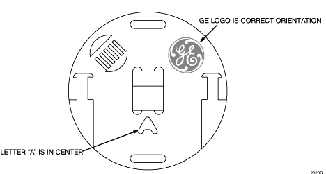

Verify that the images on the monitor correspond with Illustration 2. Do not be concerned with image quality at this time; it will be addressed during the Performance Checks.
Illustration 2: DQA PHANTOM GEOMETRY FOR "FIRST IMAGE"
